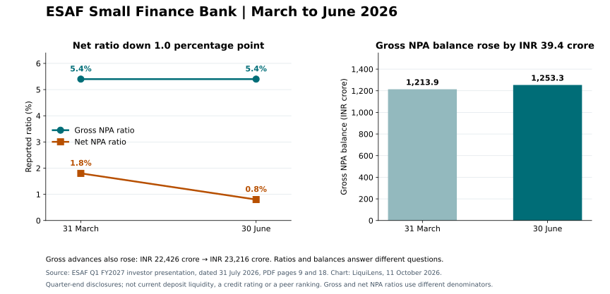

ESAF: net NPA ratio fell, gross ratio stayed at 5.4%
One covered issuer. Two reporting dates. A source-linked check of what the reported ratios and balances actually say.
Observation dates: 31 March and 30 June 2026 · Issuer filing dated 31 July 2026 · Reviewed 11 October 2026.
June figures are 103 days old at this brief's date. These are quarterly disclosures, not a view of today's withdrawals, funding access or deposit safety.
The finding
ESAF reported a net NPA ratio of 0.8% for June, down 1.0 percentage point from March's 1.8%. Its gross NPA ratio stayed at 5.4% at the reported precision. The gross NPA balance nevertheless rose from INR 1,213.9 crore to INR 1,253.3 crore; gross advances rose from INR 22,426 crore to INR 23,216 crore. Issuer asset-quality table, PDF p. 18; advances, p. 9.
A ratio alone does not explain recoveries, provisioning, write-offs, sales or loan growth. Gross and net NPA ratios have different denominators; their difference is not provision coverage.

Original LiquiLens chart using ESAF's dated factual disclosures. Values and source pages are provided below and in the downloadable extracts.
PDF page numbers include the exchange-cover letter. The printed slide number is one lower. June reported PCR includes an additional INR 64.7 crore provision; the issuer separately shows 80.5% excluding that provision. Consult its basis on PDF p. 18. Tier 1 is not substituted for CET1.
Coverage and missing evidence
Exactly one selected bank
LiquiLens identifies this institution as esaf-sfb. This comparison is neither an industry census nor a ranking. Twenty numerical facts are extracted; ten also reconcile to the current or comparative institution API records.
Two fields remain missing
CET1 and liquidity coverage ratio are null in the selected current table. They remain null in the downloads. This does not establish that the issuer has never disclosed them elsewhere.
The API's institution status is insufficient_visibility and coverage remains incomplete. Missing private withdrawals, exposures or reporting fields do not establish financial safety or distress. No combined score, credit decision or intraday liquidity claim is produced.
Checked the bank-hosted Q1 FY2027 presentation: cover-letter date on p. 1, deposits on p. 6, advances on p. 9, asset quality on p. 18 and capital on p. 19. Ten numerical API observations match the selected issuer facts; the other ten are labelled supplemental primary-filing extracts.
Retained the API's unknown publication timestamps. Its knowledge time for the reviewed facts is 4 October 2026; the period dates are March and June. Neither that knowledge time nor this request's retrieval time is the issuer's publication timestamp.
Primary verification used the official-source PDF text available through web retrieval. Direct local downloads returned HTTP 403. The API reports a PDF hash, retained in JSON, but this run did not independently hash the PDF bytes. No issuer PDF or screenshot is republished here.
Suggested credit: “Source: ESAF Small Finance Bank, Q1 FY2027 investor presentation, dated 31 July 2026. Chart and extraction: LiquiLens, 11 October 2026.” Preserve the reporting dates, units and scope notes when adapting the chart or factual extracts. Issuer documents, branding and third-party material retain their own rights; no licence to redistribute them is granted by this brief.